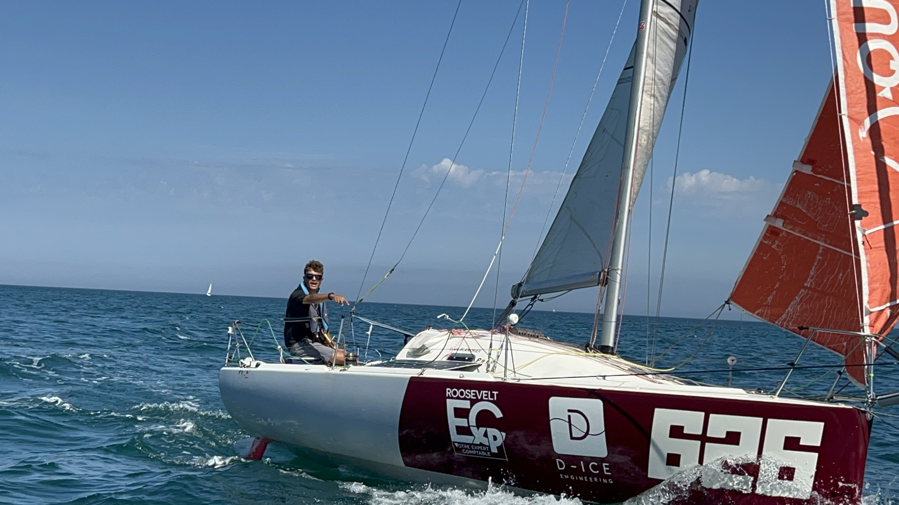

Louis Blanchier · Skipper Mini 6.50
Cap sur la
Mini-Transat
2027.
Traverser l'Atlantique en solitaire, sans assistance et sans communication avec la terre. À bord d'un voilier de 6,50 mètres.
Une aventure au long cours, déjà en mouvement.

Mini 6.50 · 6,50 m de liberté9courses disputées
7 400+milles parcourus
3saisons sur le circuit Mini
Depuis 2024, chaque saison me rapproche du grand départ.
Le défi
Un petit bateau.
Un grand océan.
La Mini-Transat est une course transatlantique en solitaire, sans assistance et sans communication avec l'extérieur. Une aventure exigeante où la préparation, l'autonomie et la ténacité comptent autant que la performance.
Je navigue depuis trois ans sur le circuit Mini 6.50. Aujourd'hui, je construis la suite : être au départ de la Mini-Transat 2027 et partager cette aventure avec des partenaires qui souhaitent embarquer à mes côtés.
Rencontrer le skipper